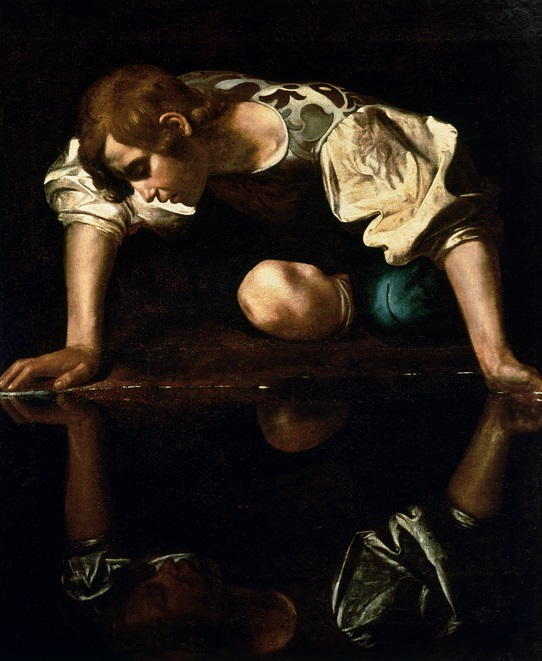
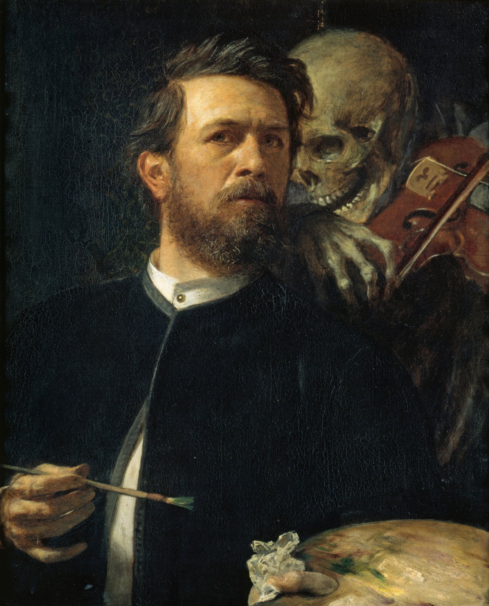

Sanatın, bilimin, tarihin ve düşüncenin sınırlarında ufkumu açan, akademik olarak beslendiğim başyapıtlar...

Narcissus
Caravaggio (1597-1599)
Keman Çalan Ölümle Otoportre
Arnold Böcklin (1872)Dünya tarihine yön vermiş, stratejileri ve vizyonlarıyla bana ilham kaynağı olan tarihi şahsiyetler:
Deneyleri, teorileri ve felsefi bakış açılarıyla evrenin sırlarını çözen isimler: